Library / Transitions and Editing
31 keywords in this category, each one tested and explained in plain language.
Pick keywords as you browse, then press Copy for AI and paste into ChatGPT, Claude or any AI. Copy keywords gives a plain list for Midjourney or Seedance.
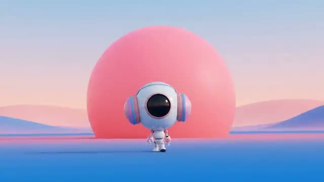
The camera rolls a full turn around its lens, and when the horizon comes back level, we are somewhere new.
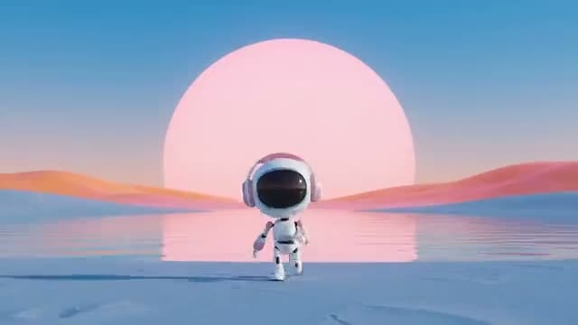
The frame fills with one colour, then cuts to something else of the same colour.
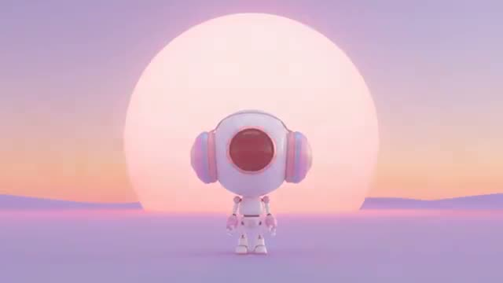
A flash of light opens a quick chain of cuts, with a round shape in the same spot each time.
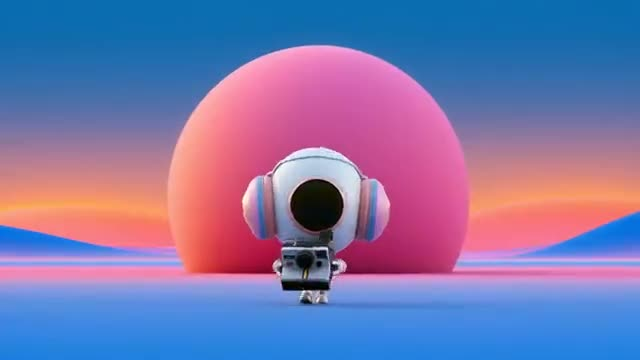
The frame blows out to white from a real light, then fades into the next shot.
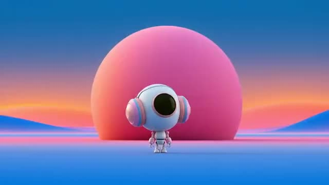
Something passes right in front of the lens and, as it clears, the scene behind has changed.
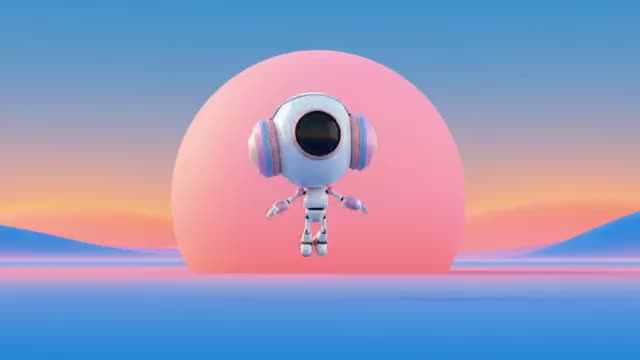
The picture freezes on a peak moment, then the next shot starts from that same pose.
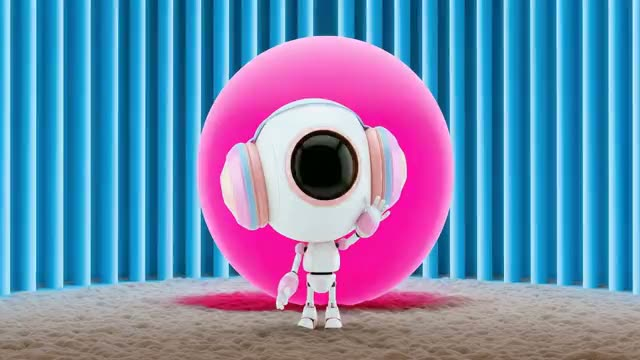
The camera stays put while time jumps between cuts, so things pop in, out or around.
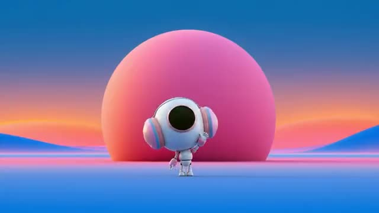
A light flares to white, and the next shot opens on a light in the same spot.
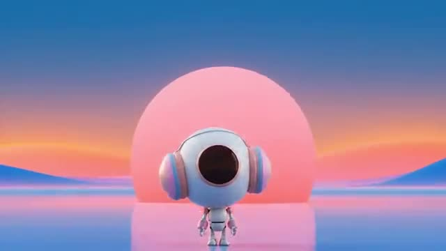
Two shots joined by matching shape, motion, or idea; the edit itself tells a story.
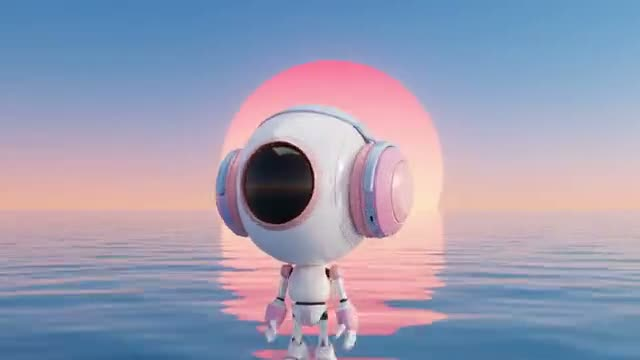
Shot A zooms fast into a detail; shot B starts tight on the same detail in a new place and pulls back.
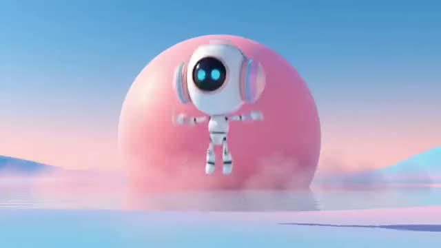
The same movement repeated in different places, with each cut landing in the middle of the move.
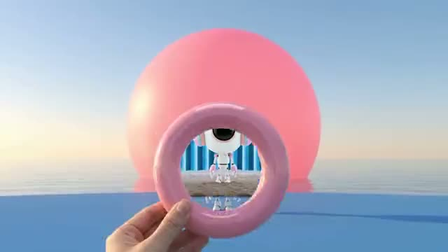
A ring, frame or lens held up to the camera shows the next scene inside it, and the camera pushes through.
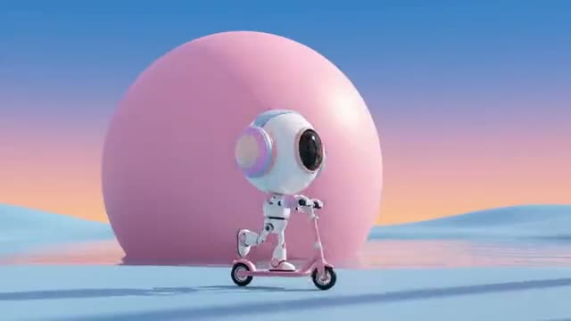
One continuous sideways pan where the vehicle and the world change each time the subject passes behind a pillar.
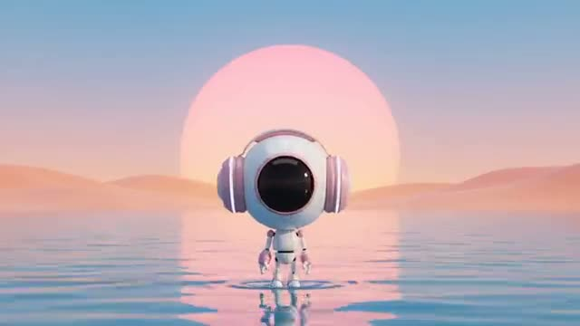
The camera pushes into something dark and round, like a peephole or a hole, and comes out in the next scene.
Time stretched: motion rendered at high frame rate and played back slow, every detail savored.
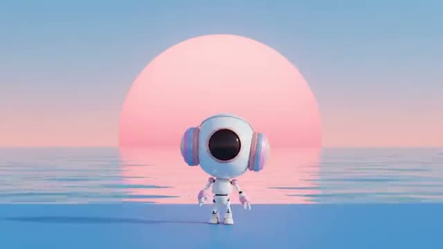
Footage accelerates or brakes mid-shot: real time snapping into slow motion and back.
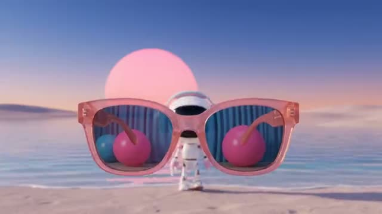
The next scene plays reflected in a pair of sunglasses, and putting them on takes us there.